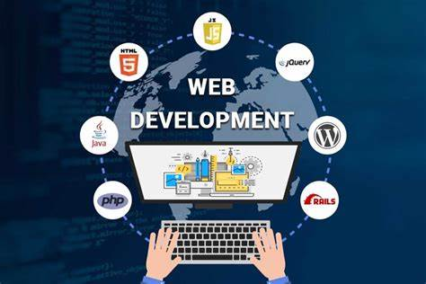

Top 5 Courses Learn From ChatGpt in 2023
As an AI model ChatGPT Dosn't Offer any courses to us directly , but the fact is it can give all guidence and helps to clear all doubts , In one word it can make You Learn , the only thing you have to do is be patience
So before reading this article these are the requirements from you to learn , ChatGPT is only available in text media that means there is no videos or audio formats while learning you have to read and understand so like that here are some requirements
REQUIREMENTS :
- Basic typing skills
- Good at reading
- A mobile or computer with good internet
- Good Questioning Ability
1) Data Science and Machine Learning:
Data Science is one of the fastest-growing fields that has become critical for businesses to make informed decisions. Machine learning is a subset of data science that focuses on building intelligent algorithms that can learn from data. Learning Python programming language, statistics, and tools like Scikit-Learn, Tensorflow, and Keras can help you get started.
2) Cloud Computing:
Cloud computing has become a popular way for businesses to manage and store data. Understanding cloud computing and becoming proficient in platforms like AWS, Google Cloud, and Microsoft Azure can help you become a valuable asset to any organization.
3) Cybersecurity:
As technology advances, the need for cybersecurity professionals is growing. Learning about various cybersecurity threats, vulnerabilities, and countermeasures can help you understand how to protect sensitive data and prevent cyberattacks.
4) Mobile App Development:

With the growing use of smartphones and tablets, mobile app development has become a crucial skill. Learning languages like Java, Swift, or Kotlin and frameworks like React Native and Flutter can help you build cross-platform mobile apps.
5) Web Development:
Web development is a broad field, but it is an essential skill for any business that wants to have a strong online presence. Learning HTML, CSS, JavaScript, and frameworks like React and Angular can help you build web applications and websites.
You can Learn Above courses by Asking to ChatGPT in a correct way and please keep it mind that these courses are not designed to learn in one day or week , give importance not only for learning but also for practising , practise every small thing you learn then no one can stop you and ChatGPT is the best plat form to clear all your doubts step by step In can generate code and spots the correct wrong thing in a code if you ask to spot , just feel free to ask it works 24/7 and it's like your personal AI , And Copy the main Concepts while you are learning it and keep a Notes for Your Course